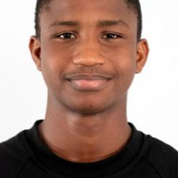

Étudiant IT | Pentester & Cybersécurité
Étudiant passionné en IT avec une expertise en cybersécurité, réseaux informatiques et développement web. Actuellement en première année de BUT informatique à l'IUT2 Grenoble. Aspirant à devenir Pentester éthique avec une solide compréhension des principes de sécurité informatique et des pratiques de défense.
IUT2 GRENOBLE
Formation complète en informatique avec spécialisations en cybersécurité, réseaux, développement web et gestion de bases de données. Apprentissage pratique via projets SAE.
Plateforme PIX
Certification officielle en compétences numériques couvrant la culture numérique, la sécurité informatique et la compétence digitale.
Lycée Blaise Pascal, Guinée
Formation générale avec spécialisation en sciences et technologies, base solide pour les études supérieures.
Great Expert Team (Guinée)
Compagnie des Bauxites de Guinée (CBG)